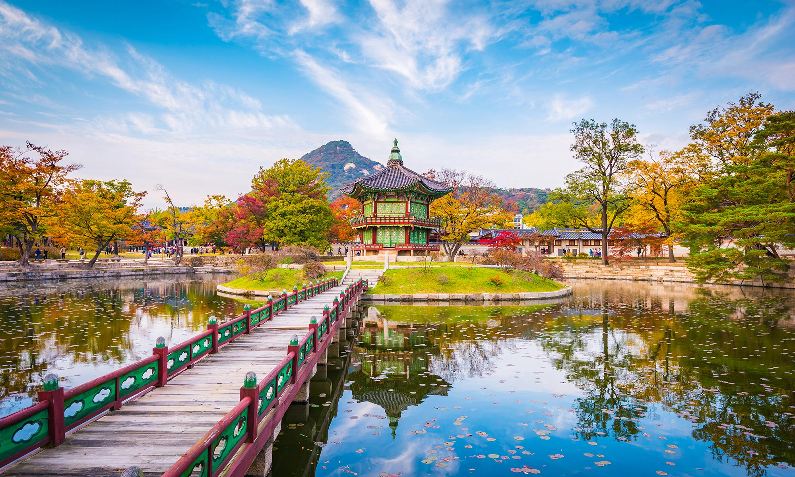

Corée du sud

La Corée du Sud :
Officiellement la république de Corée est un pays d'Asie de l'Est qui couvre la moitié sud de la péninsule coréenne. Sa capitale est Séoul. La langue officielle est le coréen, dont l'écriture est le hangeul, et la monnaie le won. L'animal représentant le pays est le tigre.
Au nord, son unique frontière terrestre d'une longueur de 238 km avec la Corée du Nord, est constituée par la zone démilitarisée (DMZ). La Corée du Sud est bordée par la mer Jaune à l’ouest, par la mer du Japon à l’est (dont l'appellation est dénoncée par les Sud-Coréens qui la désignent « mer de l'Est ») et par le détroit de Corée au sud.
Actuellement, la Corée du Sud est la dixième puissance économique mondiale selon le calcul du produit intérieur brut en parité de pouvoir d'achat et quinzième selon le critère monétaire traditionnel. En 2016, elle est à la fois un des pays d’Asie de l’Est avec l’IDH le plus élevé et le taux de fécondité le plus faible.